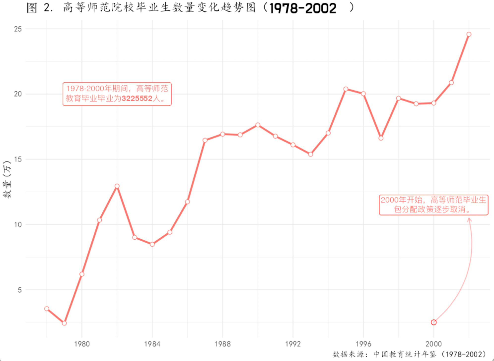
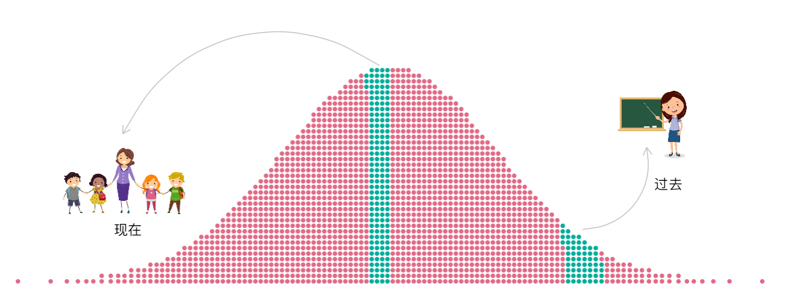

‘县中塌陷’，是优秀教师走了，还是他们老了
近两年，“县中塌陷”成了一个热点话题，曾经寄托县域学生教育希望的县域普通高中办学质量日益下滑。2021年12月9日教育部等九部门制定了《“十四五”县域普通高中发展提升行动计划》，以应对县中的发展困境。解决”县中塌陷”，首先应当知晓其原因，除了生源流失之外，另一个常被提及的原因是优秀教师外流。《计划》中的表述是：一些地方县中发展存在”教师流失比较严重”等突出问题。但县中优秀教师流动有多少，问题有多严重？在县中教育质量下滑过程中起多大作用？背后的数据支撑在哪？我没有找到相关证据，也不知道教育部门做出决策是否有相关的数据支撑。但基于我对县域教师队伍补充机制的了解，县中塌陷还可能跟另外一个原因有关，可能不是优秀教师走了，而是优秀教师老了，退休了。为什么这样说，这要从我国县域中小学教师队伍补充机制说起。
从改革开放起始到现在，县域中小学教师队伍的补充机制经历两个大的阶段，前一阶段是政府分配，后一个阶段是公开招聘，分界点在2000年左右，不同地区不太一样。政府分配模式是和当时师范教育体系相配套的，当时我国的师范教育由培养小学教师的中等师范学校、培养初中教师的师范高等专业学校和培养高中教师的师范学院或大学组成，中师的生源是初中毕业生，师专、师范学院或大学的生源是高中毕业生，师专毕业是大专学历，师范学院或大学毕业是本科学历。当时实行统包统分制度，即不交免费，毕业包分配工作。在城乡二元体制下，对广大农村生源而言，读师范不仅就业有保障，还能实现”农转非”，尤其是中师生，初中毕业就可以上，时间短，见效快，备受初中毕业生青睐，吸引了大量优秀的人才进入到中师队伍中来。高等师范学校也很受高中生毕业欢迎，下面一组数据，可以说明师范教育当年在考生中的吸引力。
“1990年，据统计，10所师范大学（国家教委直属与省、直辖市属各5所） 录取的新生中，达到第一 批重点大学录取分数线以上的人数为5562人，约占录取 总人数60％ 。”
“1992年，辽宁省第一志愿报考师范院校的考生人数占全省高校报名总人数的50%，是师范院校招生计划数的25.8倍；四川省计划招生12891人，第一志愿报考师范院校人数为130371人，是招生计划数的10倍；江苏省师范院校计划招生2385人，第一志愿报考师范院校的考生为23135人，是招生计划数的9.7倍。”
如图1和图2所示，从1978年－2000年我国的中师毕业生达503万人，高等师范院校毕业生达323万人。因为分配制度，师范学校毕业之后大多数被分配到中小学校，尤其是县域的中小学校。说当时是最优秀的人去当老师了，似乎有些夸张，但可以说的是，这一时期通过分配进入中小学教师队伍中的都是非常优秀的。中师毕业生虽然定位是小学教师，因为一些地方中学教师缺乏，一部分直接成了初中教师，后来一部分通过在职学历提升之后，成为了高中教师。 考虑中小学教师的教龄分布，现在县域中小学教师的相当一部分教学骨干是来自这些人。


后来，毕业生包分配制度终止，新教师的来源途径就成为了公开招聘，只要具备相应学历要求，通过考试获得教师资格证，都可以应聘中小学教师岗位。除了一些政策性的教师补充机制，比如公费师范生，教师队伍的补充途径主要是公开招聘。公开招聘对于县域中小学校意味着什么？根据笔者在一些县域访谈发现，现在县域中小学教师的来源主要是地级市师范类本专科学校和其它非师范类本专科学校。根据我国现在高考毕业生的分配格局，这些学校的生源基本上是属于在高考中中等偏下的生源。 因此，和之前的教师相比，现在进入中小学教师队伍整体质量大不如前了。
得出以上结论基于两个基本的假设，其一，如果说人类的认知能力分布是一种正太分布的话，如图3，可以假定的是现在出生的人们和30年、40年前出生的人们认知能力差别不大（考虑到人类认知能力漫长的演进过程，这一假设应当是成立的）；其二，高考制度是个体认知能力的一种筛选机制，然后学生根据结果被分流到不同的学校中去，比如重点、一本、二本、三本及大专院校中去，下图表达了这个意思，可以说，过去是非常优秀的人进入了县域中小学教师队伍，而如今只是中等偏下的进入了县域中小学教师队伍。

现在面临的问题是，这些优秀的教师渐渐都退休了，假定高等师范院校学生22岁毕业入职，1984年入职的男教师今年都要退休了，1989年入职的女老师今年也该退休了。因此，县域中小学校发展的一个被忽视的困境在于优秀的教师越来越少，新进来的教师而又能力平平。虽然说一个人的认知能力和教育教学能力并不必然相关，但对于高中教师而言，这种相关性还是很强的，试想一个高考数学考不到90分的人，怎么能辅导学生考140＋，虽然有特例，但是整体而言，是比较困难的。
因此，“县中塌陷”的原因之一可能不是优秀教师去了大城市，而是优秀教师渐渐退休了，没有优秀的教师补充进来。如果国家不采取措施吸引优秀的人才进入教师队伍，这个问题会越来越严重。为什么当年能够吸引优秀的人才进入教师队伍？这是计划经济和城乡二元体制下形成的制度性红利，是特定历史时期的产物，我们再也无法采取同样的手段。面对一个多元的职业市场，必须提供一个相对于其它职业更有竞争力的待遇水平，才能吸引更多优秀的人选择教师这个职业。